"Telesales nhập lead trên điện thoại: thiếu một mục thì chưa gửi được, gửi xong theo dõi được bốn nấc"
Vì sao làm
Màn P1 (L4, L5) Số đo hai tuần thử gần nhất (Tham chiếu §11): Thời gian lead → cuộc gọi đầu; tỉ lệ thao tác trên máy tính / điện thoại theo vai — ngưỡng số đặt trước khi thử.
Đã hứa
- AC-1 — — Ô nhận lead vừa điện thoại.
- AC-2 — — Thiếu một mục thì chưa gửi được.
- AC-3 — — Gửi xong thấy kết quả và lối theo dõi.
- AC-4 — — Theo dõi bốn nấc trên điện thoại.
- AC-5 — — Mất mạng lúc gửi không mất lead đã điền.
- AC-6 — — Mất mạng lúc mở danh sách không báo nhầm, có mạng lại thì thôi báo (bài học Ngoài-5/6 hàng 42).
- AC-7 — — Hai trang đi qua hệ bố cục và khuôn, dọn chỗ hở.
- AC-9 — — Vai không nhập được và danh sách trống trên điện thoại.
- AC-8 — — Máy tính giữ như cũ.
Thiết kế
docs/superpowers/specs/2026-11-04-lead-dien-thoai-design.md
Quyết định
- 2026-11-04 · Máy · approach · S1 — Đã tra tri thức: Telesales nhập lead trên điện thoại: thiếu một mục thì chưa gửi được, gửi xong theo dõi được bốn nấcKho đã khai tri_thuc — bước thiết kế tra trang trước khi chọn.
- 2026-11-04 · Máy · approach · S1 — Ô nhận lead dùng bố cục Đọc, Lead đã nhập dùng bố cục Danh sách – chi tiết của hệ bố cục; gỡ ngoại lệ có hạn ở hai khuôn.Hai khuôn đã khai bố cục đích và ghi hạn «lead-dien-thoai» cho việc chuyển (design/patterns/o-nhan-lead.md, lead-cua-toi.md).
- 2026-11-04 · Máy · approach · S1 — Giữ một đường cho hai khổ (/leads/new, /leads/mine) thay vì mở đường /leads/mobile.Tab Lead và nút «+ Lead» của lõi đã trỏ /leads/new (packages/core/src/navigation.ts); đường riêng cho điện thoại nhân đôi luật kiểm và khuôn.
- 2026-11-04 · Máy · approach · S1 — Hỏi-1 — lead nhập lúc mất mạng: giữ nguyên năm mục trên máy và báo «Chưa gửi được», có mạng lại người bấm Gửi (khuyến nghị); hay máy tự gửi khi có mạng lại?Câu giao không nói; tự gửi đổi nghĩa «người bấm gửi» của lead và cần hàng đợi ngoại tuyến (bộ đồng bộ hàng 13) — đánh đổi sản phẩm của chủ kho.
- 2026-11-04 · Máy · approach · S1 — Hỏi-2 — tab Lead trên điện thoại có hai phần «Nhập lead» · «Lead đã nhập» (khuyến nghị); hay chỉ ô nhập, Lead đã nhập để ở tab Hôm nay?vo-va-ia §2 ghi «điện thoại (hàng 51) một cột, cột phải thành tab Lead» — đọc được hai cách; cách tab hiện ra là nghĩa sản phẩm người dùng thấy.
- 2026-11-04 · Máy · descope · S1 — bỏ coverage-scan — trục khổ, việc, mạng, trạng thái và khuôn ghi tay ở Coverage; đổi lại không có bằng chứng độ phủKhông gian là hai màn đã có đổi khổ; trục đã liệt kê đủ ở hợp đồng.
- 2026-11-04 · Máy · descope · S1 — bỏ design-pass — khối đích đã chốt (bản ghép là đích, chủ kho 02/11) và bố cục Đọc / Danh sách – chi tiết đã duyệt ở hệ bố cục; hàng chỉ đổi khổdocs/design/vo-va-ia.md §2 và ADR-0024 đã chốt khối và bố cục; ảnh 390 và 1440 do lượt chấm chụp ở E1–E8.
- 2026-11-04 · Máy · approach · S1 — Lead nhập lúc mất mạng: giữ nguyên năm mục trên máy, báo rõ «Chưa gửi được — mất mạng», có mạng lại người bấm Gửi; máy không tự gửi.Tham chiếu chỉ giữ ghi ngoại tuyến cho kết quả gọi và đổi giá của đầu chủ; lead không thuộc hàng đợi ghi ngoại tuyến (giám sát trả D-13).
- 2026-11-04 · Máy · approach · S1 — Tab Lead trên điện thoại có hai phần «Nhập lead» · «Lead đã nhập» kèm bốn nấc.Tham chiếu vai Telesales trên điện thoại «nhập lead, theo dõi bốn nấc» cộng vo-va-ia «cột phải thành tab Lead» (giám sát trả D-14).
- 2026-11-04 · Máy · descope · S1 — bỏ design-pass — hình của màn đã chốt (tab Lead hai phần theo Tham chiếu vai Telesales, một cột theo vo-va-ia, bố cục theo khuôn); không còn lựa chọn nhìn nào để người chọnPhản biện P0-1: căn cứ cũ chỉ liên quan; nay Hỏi-2 đã thay bằng dòng có căn cứ Tham chiếu, và E1 chặn nút Gửi ra ngoài khung nhìn ở 390.
- 2026-11-04 · Máy · descope · S1 — bỏ coverage-scan — trục lấy đủ từ bảng Trạng thái × khổ của Đặc tả UX, mỗi dòng bảng có AC (thêm AC-9 cho vai không nhập được, trống, đang tải); đổi lại không có bằng chứng độ phủPhản biện P0-2: lối chết cũ là lời dự đoán; nay ràng buộc nêu được là bảng trạng thái của thiết kế, và các ô sót đã có AC-9.
- 2026-11-04 · Người · seal · gate1 —
- 2026-11-04 · Máy · fix · S3 — E3 thêm một nhịp chia trước khi đọc nấc «Đã gửi»; câu báo vai không nhập được tách tiêu đề ngắn và mô tả vì ở khổ 390 tiêu đề bị cắt.Lead vừa gửi hiện «Chờ chia» tới nhịp chia (lõi hàng 27); ảnh thử 390 cho thấy tiêu đề TrangThai một dòng cắt câu dài.
- 2026-11-04 · Máy · fix · S4-r1 — Gửi xong (hay chưa gửi được) màn cuộn tới kết quả, ô số nhận tiêu điểm không cuộn; phép đo E4 đưa hàng tạo từ lead sang Đang bán và đo cả mã hàng; E6 tắt lớp giữ chậm trước Thử lại; ghim lại bản đồ khuôn.E3 đỏ: ở 390 kết quả nằm dưới nút Gửi và tiêu điểm ô số cuộn trang lên đầu; E4 đỏ: «Lên bảng» suy từ hàng Đang bán (app.lead_board_at_all); E6 đỏ do lớp giữ chậm của chính phép đo; E7a đỏ vì chấm theo bản ghim trước khi sửa khuôn.
- 2026-11-04 · Máy · fix · S4-r1 — Kết quả gửi cuộn vào giữa khung nhìn thay vì sát đáy; phép đo E4 nhập lead có mã căn để hàng tạo từ lead lên được Đang bán.E3 đỏ: thanh tab dưới che kết quả khi cuộn sát đáy; E4 đỏ: hàng chỉ biết toà thiếu unitNumber nên đổi trạng thái Active bị 400 missing-requirement.
- 2026-11-04 · Máy · fix · S4-r2 — Chỗ thử tự tắt máy dev khác của chính worktree trước khi dựng máy 3476; evals ghi rõ không bật máy dev nào khác.Lượt 2 BLOCKED hạ tầng: tác tử chấm bật next dev 3460 cùng thư mục apps/web, Next chặn máy dev thứ hai nên chỗ thử 3476 không lên (bảy ui-check).
- 2026-11-04 · Máy · revisit · gate2 — Ngoài-1: ghi Known limitsmáy tự định tuyến theo đề xuất S4 «known-limits» — kho bật feature_loop.ngoai_n_tu_dinh_tuyen
- 2026-11-04 · Máy · revisit · gate2 — Ngoài-2: ghi Known limitsmáy tự định tuyến theo đề xuất S4 «known-limits» — kho bật feature_loop.ngoai_n_tu_dinh_tuyen
- 2026-11-04 · Máy · revisit · gate2 — Ngoài-3: ghi Known limitsmáy tự định tuyến theo đề xuất S4 «known-limits» — kho bật feature_loop.ngoai_n_tu_dinh_tuyen
- 2026-11-04 · Máy · revisit · gate2 — Ngoài-4: ghi Known limitsmáy tự định tuyến theo đề xuất S4 «known-limits» — kho bật feature_loop.ngoai_n_tu_dinh_tuyen
- 2026-11-04 · Máy · revisit · gate2 — Ngoài-5: ghi Known limitsmáy tự định tuyến theo đề xuất S4 «known-limits» — kho bật feature_loop.ngoai_n_tu_dinh_tuyen
- 2026-11-04 · Máy · revisit · gate2 — Ngoài-6: ghi Known limitsmáy tự định tuyến theo đề xuất S4 «known-limits» — kho bật feature_loop.ngoai_n_tu_dinh_tuyen
- 2026-11-04 · Máy · revisit · gate2 — Ngoài-7: ghi Known limitsmáy tự định tuyến theo đề xuất S4 «known-limits» — kho bật feature_loop.ngoai_n_tu_dinh_tuyen
- 2026-11-04 · Máy · revisit · gate2 — Ngoài-8: ghi Known limitsmáy tự định tuyến theo đề xuất S4 «known-limits» — kho bật feature_loop.ngoai_n_tu_dinh_tuyen
- 2026-11-04 · Máy · revisit · gate2 — Ngoài-9: ghi Known limitsmáy tự định tuyến theo đề xuất S4 «known-limits» — kho bật feature_loop.ngoai_n_tu_dinh_tuyen
- 2026-11-04 · Máy · revisit · gate2 — Ngoài-10: ghi Known limitsmáy tự định tuyến theo đề xuất S4 «known-limits» — kho bật feature_loop.ngoai_n_tu_dinh_tuyen
- 2026-11-04 · Máy · revisit · gate2 — Ngoài-11: ghi Known limitsmáy tự định tuyến theo đề xuất S4 «known-limits» — kho bật feature_loop.ngoai_n_tu_dinh_tuyen
- 2026-11-04 · Máy · revisit · gate2 — Ngoài-12: chấp nhận, không sửamáy tự định tuyến theo đề xuất S4 «wont-fix» — kho bật feature_loop.ngoai_n_tu_dinh_tuyen
- 2026-11-04 · Máy · revisit · gate2 — Ngoài-13: ghi Known limitsmáy tự định tuyến theo đề xuất S4 «known-limits» — kho bật feature_loop.ngoai_n_tu_dinh_tuyen
- 2026-11-04 · Máy · revisit · gate2 — Ngoài-14: ghi Known limitsmáy tự định tuyến theo đề xuất S4 «known-limits» — kho bật feature_loop.ngoai_n_tu_dinh_tuyen
- 2026-11-04 · Máy · revisit · gate2 — Ngoài-15: ghi Known limitsmáy tự định tuyến theo đề xuất S4 «known-limits» — kho bật feature_loop.ngoai_n_tu_dinh_tuyen
Bằng chứng
Các eval
| Eval | Tiêu chí | Loại | Verdict | run_id | verified_at |
|---|---|---|---|---|---|
| E1 | AC-1 | ui-check | PASS | minted-lead-dien-thoai-E1-r3 | 2026-11-04T12:25:51Z |
| E2 | AC-2 | ui-check | PASS | minted-lead-dien-thoai-E2-r3 | 2026-11-04T12:25:51Z |
| E3 | AC-3 | ui-check | PASS | minted-lead-dien-thoai-E3-r3 | 2026-11-04T12:25:51Z |
| E4 | AC-4 | ui-check | PASS | minted-lead-dien-thoai-E4-r3 | 2026-11-04T12:25:51Z |
| E5 | AC-5 | ui-check | PASS | minted-lead-dien-thoai-E5-r3 | 2026-11-04T12:25:51Z |
| E6 | AC-6 | ui-check | PASS | minted-lead-dien-thoai-E6-r3 | 2026-11-04T12:25:51Z |
| E7a | AC-7 | script | PASS (CARRY-FORWARD TỪ ROUND 2) | minted-lead-dien-thoai-E7a-r2 | 2026-11-04T11:02:38Z |
| E7b | AC-7 | test | PASS (CARRY-FORWARD TỪ ROUND 1) | minted-lead-dien-thoai-E7b-r1 | 2026-11-04T09:54:20Z |
| E8 | AC-8 | ui-check | PASS | minted-lead-dien-thoai-E8-r3 | 2026-11-04T12:25:51Z |
| E9 | AC-9 | ui-check | PASS | minted-lead-dien-thoai-E9-r3 | 2026-11-04T12:25:51Z |
Chi tiết từng eval
PASS E1 · ui-check
AC-1: — Ô nhận lead vừa điện thoại.
PASS E2 · ui-check
AC-2: — Thiếu một mục thì chưa gửi được.

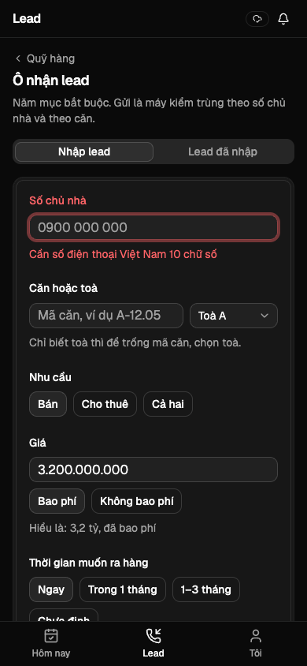
PASS E3 · ui-check
AC-3: — Gửi xong thấy kết quả và lối theo dõi.
PASS E4 · ui-check
AC-4: — Theo dõi bốn nấc trên điện thoại.
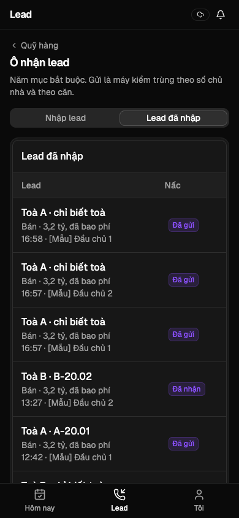
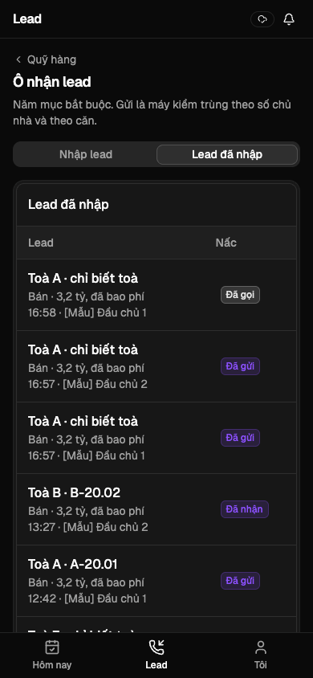


PASS E5 · ui-check
AC-5: — Mất mạng lúc gửi không mất lead đã điền.
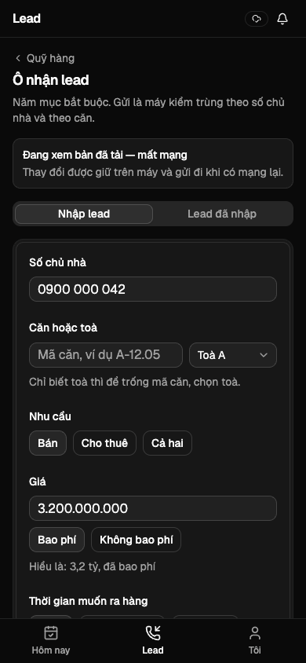
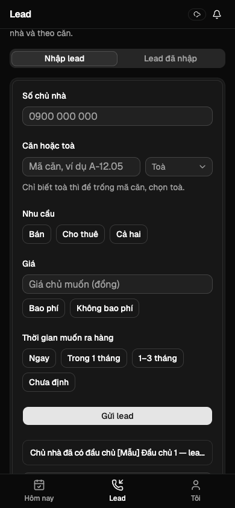
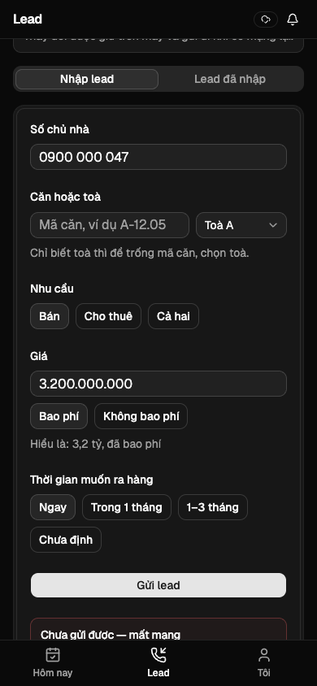

PASS E6 · ui-check
AC-6: — Mất mạng lúc mở danh sách không báo nhầm, có mạng lại thì thôi báo (bài học Ngoài-5/6 hàng 42).
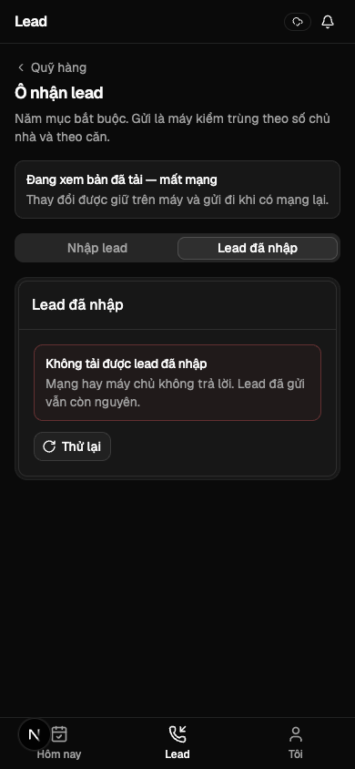
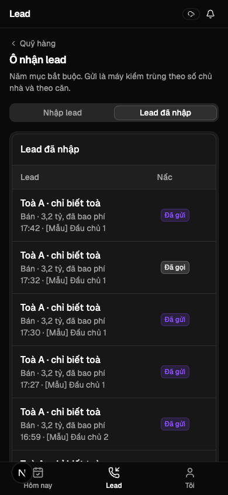
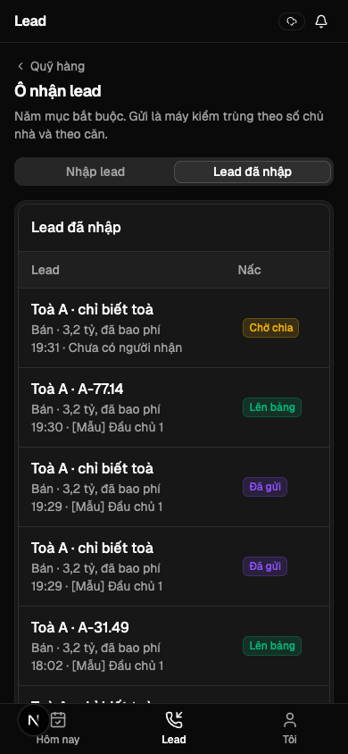

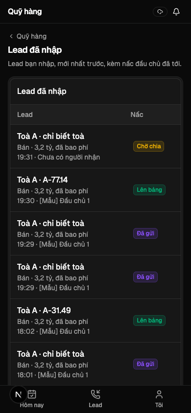
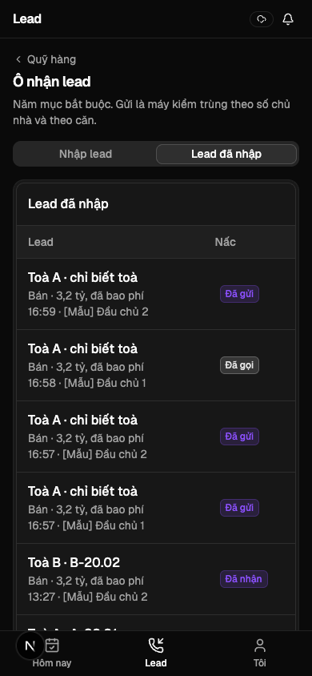

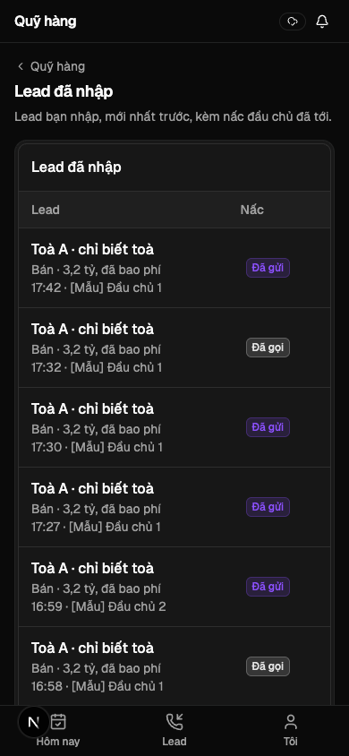
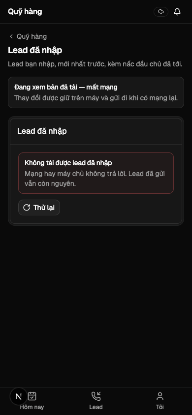
PASS (CARRY-FORWARD TỪ ROUND 2) E7a · script
AC-7: — Hai trang đi qua hệ bố cục và khuôn, dọn chỗ hở.
PASS (CARRY-FORWARD TỪ ROUND 1) E7b · test
AC-7: — Hai trang đi qua hệ bố cục và khuôn, dọn chỗ hở.
PASS E8 · ui-check
AC-8: — Máy tính giữ như cũ.
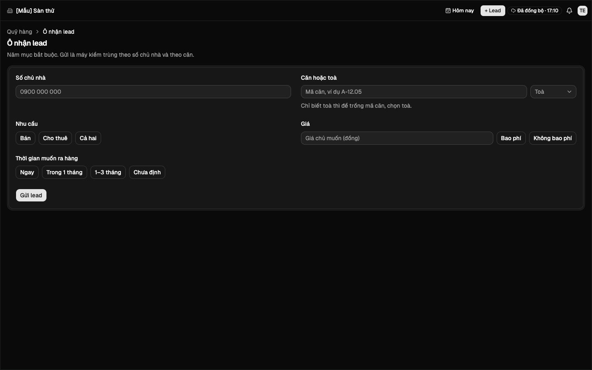


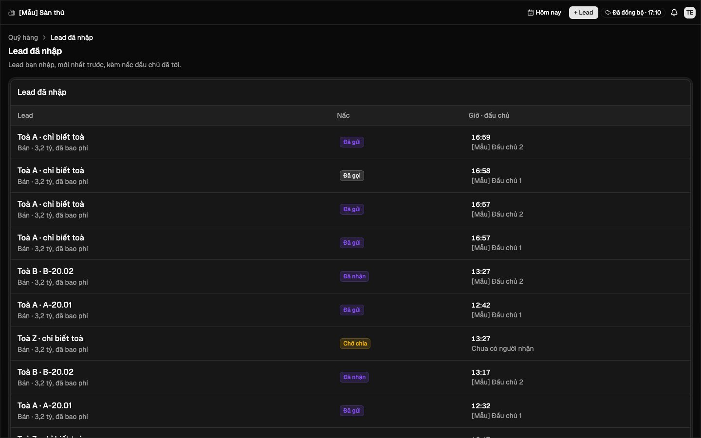
PASS E9 · ui-check
AC-9: — Vai không nhập được và danh sách trống trên điện thoại.


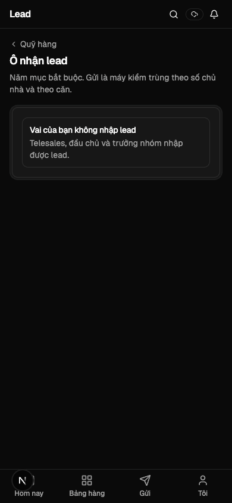
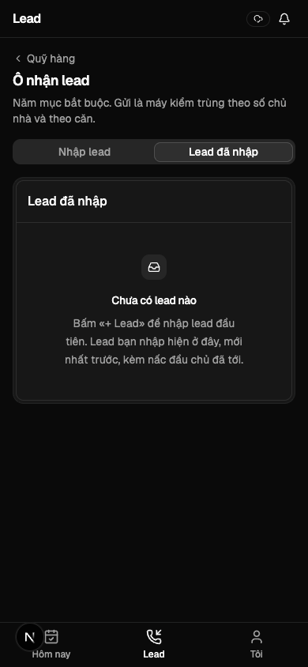
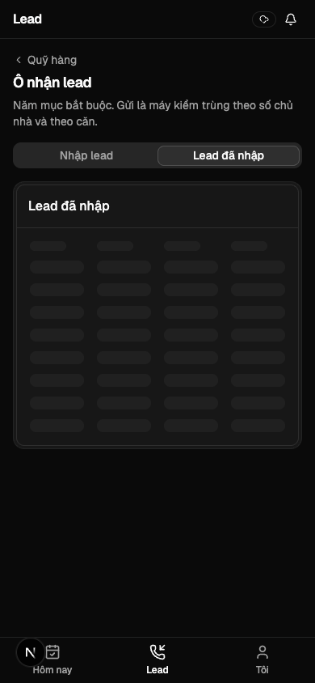

Vòng verify
- Round 1: E3, E4 do (kem hạ tầng máy dev thừa) — chấm lại BLOCKED. Returned to implementation.
- Round 2: BLOCKED hạ tầng — chỗ thử chưa tự dọn máy dev cùng worktree. Returned to implementation.
- Round 3: mọi eval PASS (E7a, E7b carry-forward) — chỗ thử tự dọn máy dev cùng worktree; verdict PASS.
- run_id: repin-20261104T124515Z-50261
- sha: ea8791153c4d5845e10f8e3a5a8295edd03ad7e3 · suites: 7 lệnh exit 0 · evals: 2/2 eval máy đạt kỳ vọng · ngoài làn máy: E1 (E1 không khai paths), E2 (E2 không khai paths), E3 (E3 không khai paths), E4 (E4 không khai paths), E5 (E5 không khai paths), E6 (E6 không khai paths), E9 (E9 không khai paths), E8 (E8 không khai paths) · AC không có chốt máy: AC-1, AC-2, AC-3, AC-4, AC-5, AC-6, AC-9, AC-8
- run_id: repin-20261104T133555Z-71011
- sha: 3fa054d73767a42c81f6226a058bcfee477095ec · suites: 7 lệnh exit 0 · evals: 2/2 eval máy đạt kỳ vọng · ngoài làn máy: E1 (E1 không khai paths), E2 (E2 không khai paths), E3 (E3 không khai paths), E4 (E4 không khai paths), E5 (E5 không khai paths), E6 (E6 không khai paths), E9 (E9 không khai paths), E8 (E8 không khai paths) · AC không có chốt máy: AC-1, AC-2, AC-3, AC-4, AC-5, AC-6, AC-9, AC-8
Checklist Cổng 2 (bạn)
Tài nguyên
| Khối | Tác tử | Token đầu ra |
|---|---|---|
| S4 round 1 | 23 | 69.974 |
| S4 round 1 (chấm lại) | 22 | 78.652 |
| S4 round 2 | 21 | 45.835 |
| S4 round 3 | 21 | 46.852 |
4 lượt chấm · tổng 241.313 token
Giới hạn và ngoài hợp đồng
- Máy tự gửi lead khi có mạng lại, hàng đợi lead ngoại tuyến — Tham chiếu chỉ giữ ghi ngoại tuyến cho kết quả gọi và đổi giá.
- Đổi luật năm mục, kiểm trùng hay lối API của hàng 24, 27.
- Màn Hôm nay của telesales (giữ vùng «Lead đã nhập» như hàng 27).
- Thử trên máy thật bằng máy chấm — đi yêu cầu `can-nguoi` cho chủ kho (luật đợt 16).
Giao
chưa ghi quan sát production
Giá trị
- Câu hỏi phép đo trả lời: [đề xuất] đã đạt «Telesales nhập lead trên điện thoại: thiếu một mục thì chưa gửi được, gửi xong theo dõi được bốn nấc» chưa? — chưa đo
- Kết quả nào là SỐNG: [đề xuất] Telesales nhập lead trên điện thoại: thiếu một mục thì chưa gửi được, gửi xong theo dõi được bốn nấc — chưa đo
- Kết quả nào là CHẾT: [đề xuất] chưa đạt «Telesales nhập lead trên điện thoại: thiếu một mục thì chưa gửi được, gửi xong theo dõi được bốn nấc» khi hết timebox — chưa đo
- Timebox: … — chưa đo